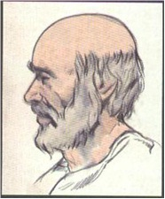
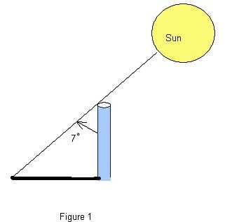
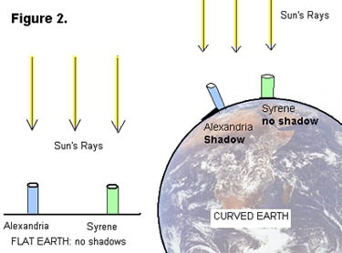
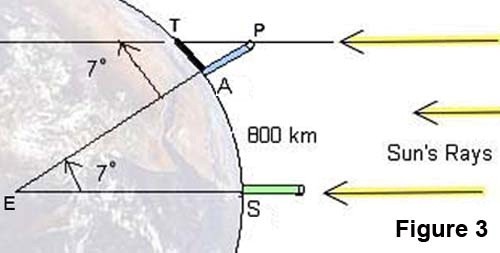
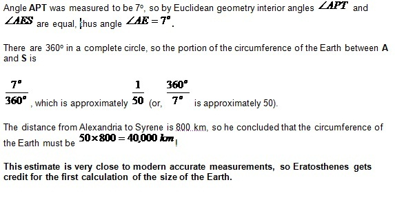

MESURES DEL MERIDIÀ TERRESTRE: ERATÒSTENES
|
|

|
Eratòstenes va néixer a Cirene (Líbia) l’any 275 aC i va morir a
Alexandria (Egipte) l’any 194
aC.
Era astrònom, geògraf, matemàtic i filòsof, iva
ser una de les figures més eminents del gran segle de la ciència grega.
|
|
Font:
Matemàtiques 1, Editorial Casals
|
Llegeix aquest text on s’explica com Eratòstenes va ser
capaç de determinar la longitud del meridià terrestre.
|
Around 250 BC, at noon on the day of the summer
solstice (when the sun is at its highest point in the Northern Hemisphere) in
Syrene, Egypt, sunlight filled the vertical shaft of a well; this indicates
that the sun is directly overhead, so a vertical pole would cast no shadow.
Eratosthenes, who lived in Alexandria, heard of this from a traveler. So on
the same day, different year, he noticed that in Alexandria, some 800 kilometers
(km) away, a vertical pole cast a shadow. From these observations, he made
two deductions:
A. the earth is curved;
B. found the first estimate for the circumference of
the Earth.
|

|
|
The Earth is Spherical
He measured the angle made by the pole and a line joining the tip of the
shadow and the top of the pole (see Figure 1) and found the angle to be about
7o. Then he assumed that light rays from the sun to the Earth were
essentially parallel since the sun was so far away and the Earth was so small
relative to the sun. From this, and his observations in Alexandria and
Syrene, he concluded that the Earth must be curved (see Figure 2), and
therefore must be spherical.
|

|
|
Using Math to Find the Circumference of the Earth
Next, he used all this information to obtain the first nearly accurate
estimation of the circumference of the Earth. Here’s how: In the
(not-to-scale) Figure 3

A denotes the
base of the pole in Alexandria;
S the
base of a pole in Syrene;
T the
tip of the shadow cast by the pole in Alexandria;
P the
top of the same pole;
E the
center of the Earth.
|
|

|
|
Font: http://keyah.asu.edu/lessons/Eratosthenes/KM4.html

|
Anar a activitats
|